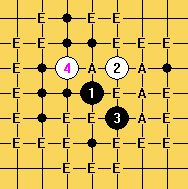
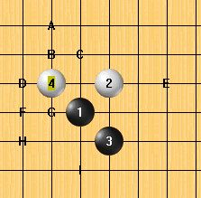
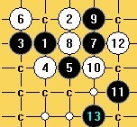

（ I7局 ）山口规则的浦月
#1 （ I7局 ）山口规则的浦月 作者：失落刀 发表时间：2009-8-18 19:05:37
（图1）
（图2）
图2中5的各个打点有什么结论？请教。
#2 Re:山口规则的浦月 作者：疏星终结 发表时间：2009-8-18 19:19:25
H点结论
=======上图对应的爱五子棋谱代码如下，以便你拆解：========
h8i9i7g9f7h10f8f9
======================================================
=======上图对应的爱五子棋谱代码如下，以便你拆解：========
h8i9i7g9f7h10g7h7f8j8
======================================================
=======上图对应的爱五子棋谱代码如下，以便你拆解：========
h8i9i7g9f7h10j8f9h9h7
======================================================
［ 失落刀 于 2009-8-18 19:24:39 时花20金币送鲜花一朵］感谢！大家一起分享把！
#3 Re:山口规则的浦月 作者：疏星终结 发表时间：2009-8-18 20:10:41
=======上图对应的爱五子棋谱代码如下，以便你拆解：========
h8i9i7g9h6j8k7g11
======================================================
I点的这个5有点想明星，可是这个白棋应该是占优的吧
#4 Re:山口规则的浦月 作者：失落刀 发表时间：2009-8-18 20:24:46
=======上图对应的爱五子棋谱代码如下，以便你拆解：========
h8i9i7g9g10h10h9i11j12j8k7j10f11i8j7h7
======================================================
我检查5=B，白胜。
#5 Re:山口规则的浦月 作者：潇洒 发表时间：2009-8-18 21:21:18
=======上图对应的爱五子棋谱代码如下，以便你拆解：========
h8i9i7g9f9h10j8i11f8i12
======================================================
=======上图对应的爱五子棋谱代码如下，以便你拆解：========
h8i9i7g9f9h10f8g11j8g8g10h12
======================================================
5败，白必胜！
［ 失落刀 于 2009-8-18 21:42:46 时花20金币送鲜花一朵］
#6 Re:山口规则的浦月 作者：潇洒 发表时间：2009-8-18 21:22:20
=======上图对应的爱五子棋谱代码如下，以便你拆解：========
h8i9i7g9f8g8
======================================================
黑白混战，白稍好
［ 失落刀 于 2009-8-18 21:48:01 时花20金币送鲜花一朵］
#7 Re:山口规则的浦月 作者：潇洒 发表时间：2009-8-18 21:23:10
=======上图对应的爱五子棋谱代码如下，以便你拆解：========
h8i9i7g9h6j8k7g11
======================================================
白8胜。
［ 失落刀 于 2009-8-18 21:49:20 时花20金币送鲜花一朵］
#8 Re:山口规则的浦月 作者：潇洒 发表时间：2009-8-18 21:24:15
=======上图对应的爱五子棋谱代码如下，以便你拆解：========
h8i9i7g9h10h9f9g10i8g8g11f7e6f11
======================================================
5败，白必胜！
［ 失落刀 于 2009-8-18 21:49:40 时花20金币送鲜花一朵］
#9 Re:山口规则的浦月 作者：潇洒 发表时间：2009-8-18 21:29:59
=======上图对应的爱五子棋谱代码如下，以便你拆解：========
h8i9i7g9g10h10h9i11j12j8k7j10
======================================================
同失落刀的4楼。
#10 Re:山口规则的浦月 作者：潇洒 发表时间：2009-8-18 21:30:55
=======上图对应的爱五子棋谱代码如下，以便你拆解：========
h8i9i7g9g8f8h10h7
======================================================
混战 黑稍好
［ 失落刀 于 2009-8-18 21:50:02 时花20金币送鲜花一朵］
#11 Re:山口规则的浦月 作者：失落刀 发表时间：2009-8-18 21:41:39
3楼和7楼相等，7必败。
若7走1和5之间，不知道什么结论？
#12 Re:山口规则的浦月 作者：潇洒 发表时间：2009-8-18 21:44:14
=======上图对应的爱五子棋谱代码如下，以便你拆解：========
h8i9i7g9g11h9f9i11i8g8i10g6g7e6f7e7
======================================================
=======上图对应的爱五子棋谱代码如下，以便你拆解：========
h8i9i7g9g11h9j9f8f9e7d6e8e6g6g8e10d9e9e11d10
======================================================
5败，白必胜！
［ 失落刀 于 2009-8-18 21:56:43 时花20金币送鲜花一朵］
#13 Re:山口规则的浦月 作者：失落刀 发表时间：2009-8-18 22:28:30
=======上图对应的爱五子棋谱代码如下，以便你拆解：========
h8i9i7g9k9
======================================================
研究1
#14 Re:山口规则的浦月 作者：白河愁 发表时间：2009-8-18 22:47:15
=======上图对应的爱五子棋谱代码如下，以便你拆解：========
h8i9i7g9k9j8h10h9f9g8g7f7
======================================================
这个不好地毯吧- -
#15 Re:山口规则的浦月 作者：失落刀 发表时间：2009-8-19 19:23:56
=======上图对应的爱五子棋谱代码如下，以便你拆解：========
h8i9i7g9h6
======================================================
研究2
#16 Re:山口规则的浦月 作者：失落刀 发表时间：2009-8-19 19:24:38
=======上图对应的爱五子棋谱代码如下，以便你拆解：========
h8i9i7g9g8
======================================================
研究3
#17 Re:山口规则的浦月 作者：失落刀 发表时间：2009-8-19 19:25:22
=======上图对应的爱五子棋谱代码如下，以便你拆解：========
h8i9i7g9f8
======================================================
研究4
#18 Re:山口规则的浦月 作者：淡红的秋樱 发表时间：2009-10-16 12:57:53
=======上图对应的爱五子棋谱代码如下，以便你拆解：========
h8i9i7g9f9h10f8g11j8g8g10h12f10a1k9
======================================================
两个13不会
#19 Re:山口规则的浦月 作者：潇洒 发表时间：2009-10-19 17:23:26
=======上图对应的爱五子棋谱代码如下，以便你拆解：========
h8i9i7g9f9h10f8g11j8g8g10h12f10f7
======================================================
#20 Re:山口规则的浦月 作者：潇洒 发表时间：2009-10-19 17:24:21
=======上图对应的爱五子棋谱代码如下，以便你拆解：========
h8i9i7g9f9h10f8g11j8g8g10h12k9h6
======================================================
#21 Re:（ I7局 ）山口规则的浦月 作者：小帮帮 发表时间：2010-1-3 17:42:20
山口规则下，还用这个4就亏大了，首选这个4
=======上图对应的爱五子棋谱代码如下，以便你拆解：========
h8i9i7j8
======================================================
考死人的
#22 Re:（ I7局 ）山口规则的浦月 作者：小帮帮 发表时间：2010-1-3 18:01:00
另外这个的必胜，有些麻烦=======上图对应的爱五子棋谱代码如下，以便你拆解：========
h8i9i7g9h6j8k7g11h9h7f8
======================================================
#23 Re:（ I7局 ）山口规则的浦月 作者：小帮帮 发表时间：2010-1-3 18:04:13
这个更加麻烦
=======上图对应的爱五子棋谱代码如下，以便你拆解：========
h8i9i7g9h6j8h7h9j9
======================================================
这个5，怎么就必败了?
#24 Re:（ I7局 ）山口规则的浦月 作者：流逝 发表时间：2010-1-14 11:11:32
楼上的7应该必败不了 但是白大优可以证明~
另外还一个奇怪的5,大家帮忙看看
=======上图对应的爱五子棋谱代码如下，以便你拆解：========
h8i9i7g9l7
======================================================
#25 Re:（ I7局 ）山口规则的浦月 作者：潇洒 发表时间：2010-1-14 11:27:54
=======上图对应的爱五子棋谱代码如下，以便你拆解：========
h8i9i7g9l7g11j7h7
======================================================
这个6地毯了
［此帖子已被 潇洒 在 2010-1-14 11:28:27 编辑过］
［ 失落刀 于 2010-1-17 10:27:37 时奖励此帖[金币加 20 威望加1］
#26 Re:Re:山口规则的浦月 作者：sonix 发表时间：2010-3-25 10:57:04
引用：
原文由 潇洒 发表于 2009-10-19 17:24:21 :
=======上图对应的爱五子棋谱代码如下，以便你拆解：========
h8i9i7g9f9h10f8g11j8g8g10h12k9h6
======================================================
请教黑如何杀？
=======上图对应的爱五子棋谱代码如下，以便你拆解：========
h8i9i7g9f9h10f8g11j8g8g10h12k9h6h11i12g12
======================================================
#27 Re:（ I7局 ）山口规则的浦月 作者：淡红的秋樱 发表时间：2010-3-25 11:21:10
to 26楼 ，xiaosa本意是白杀吧。
我没有找到地毯。也许xiaosa认为上面白棋纠结完之后就大优乃至必胜了。
#28 Re:（ I7局 ）山口规则的浦月 作者：sonix 发表时间：2010-3-25 12:03:05
=======上图对应的爱五子棋谱代码如下，以便你拆解：========
h8i9i7g9g8h7
======================================================
请教这个能否杀呢？
#29 Re:（ I7局 ）山口规则的浦月 作者：淡红的秋樱 发表时间：2010-3-25 13:04:26
=======上图对应的爱五子棋谱代码如下，以便你拆解：========
h8i9i7g9g8h7j8i8j9j7k6k8k9l10j5
======================================================
我找找，在论坛里面也许能找到。
=======上图对应的爱五子棋谱代码如下，以便你拆解：========
h8h7i7i9g8g9
======================================================
#30 Re:（ I7局 ）山口规则的浦月 作者：sonix 发表时间：2010-3-25 14:00:51
=======上图对应的爱五子棋谱代码如下，以便你拆解：========
h8i9i7g9g8h7j8i8j9j7k6k8h5f8
======================================================
我尝试了这个13，14唯一没杀掉，楼上的13、15正在看
#31 Re:Re:（ I7局 ）山口规则的浦月 作者：淡红的秋樱 发表时间：2010-3-25 16:47:11
=======上图对应的爱五子棋谱代码如下，以便你拆解：========
h8h9i10j8i9j10i7i8j7h7g6
======================================================
找不到论坛里的原帖了。以前抄的内容还在，期待能够对楼上有帮助。
#32 Re:（ I7局 ）山口规则的浦月 作者：sonix 发表时间：2010-3-25 17:28:17
貌似由于盘端问题还有3个点杀不掉
#33 Re:（ I7局 ）山口规则的浦月 作者：淡红的秋樱 发表时间：2010-3-25 18:54:02
32楼，那这样就搞定了。
=======上图对应的爱五子棋谱代码如下，以便你拆解：========
h8i9i7g9g8h7j8i8j9j7k6k8j5i5k4
======================================================
=======上图对应的爱五子棋谱代码如下，以便你拆解：========
h8i9i7g9g8h7j8i8j9j7k6k8j5h5i6
======================================================
=======上图对应的爱五子棋谱代码如下，以便你拆解：========
h8i9i7g9g8h7j8i8j9j7k6k8j5j6i4h3l9l7g5h6h4h5g4
======================================================
［ sonix 于 2010-3-25 19:27:10 时花20金币送鲜花一朵］
#34 Re:（ I7局 ）山口规则的浦月 作者：sonix 发表时间：2010-3-25 19:29:50
好的，杀干净了#35 Re:（ I7局 ）山口规则的浦月 作者：26 发表时间：2010-3-26 12:06:12
34楼的杀干净了共享下馅饼撒
#36 Re:（ I7局 ）山口规则的浦月 作者：小玄 发表时间：2010-4-23 23:49:48
=======上图对应的爱五子棋谱代码如下，以便你拆解：========
h8i9i7j8f8j7j6g9g8e8h9f7
======================================================
这个12黑能胜吗?
如果不行前面怎么下好呢?
#37 Re:（ I7局 ）山口规则的浦月 作者：小玄 发表时间：2010-4-24 0:07:07
刚发现7下9就胜了
#38 Re:（ I7局 ）山口规则的浦月 作者：淡红的秋樱 发表时间：2010-6-18 20:38:21
=======上图对应的爱五子棋谱代码如下，以便你拆解：========
h8i9i7j6h10a1g10b1g9c1h9d1g8e1f8
======================================================
6个胜点。目前找到的。通常浦月开6个打点，导致这个4通常被排除了。
=======上图对应的爱五子棋谱代码如下，以便你拆解：========
h8i9i7j6g10h10g9g8g11
======================================================
这个5应该算是容易，很多走法有通型。有旧谱的话，3分钟之内扫完正常。
=======上图对应的爱五子棋谱代码如下，以便你拆解：========
h8i9i7j6h10h9g9f8
======================================================
此图与传统走法不同。记得几年前我就在orc里面看到tennet走出过正确的9，对手应的太弱而他速胜了。也许tennet并不知道正确的11。
［此帖子已被 淡红的秋樱 在 2010-6-18 21:16:50 编辑过］
#39 Re:（ I7局 ）山口规则的浦月 作者：棋心 发表时间：2010-6-19 8:50:59
=======上图对应的爱五子棋谱代码如下，以便你拆解：========
h8i9i7h6
======================================================
这个4的打点
#40 Re:（ I7局 ）山口规则的浦月 作者：侯军学棋 发表时间：2010-6-19 9:05:54
=======上图对应的爱五子棋谱代码如下，以便你拆解：========
h8i9i7g9h9h7j8h6
======================================================请教这几个8如何必胜谢谢
=======上图对应的爱五子棋谱代码如下，以便你拆解：========
h8i9i7g9h9j8g8
======================================================
=======上图对应的爱五子棋谱代码如下，以便你拆解：========
h8i9i7g9h9h7j8i8
======================================================
#41 Re:（ I7局 ）山口规则的浦月 作者：淡红的秋樱 发表时间：2010-6-19 9:13:58
=======上图对应的爱五子棋谱代码如下，以便你拆解：========
h8i9i7h6g9a15g8b15h9
======================================================
这三个打点是必胜的，考虑到浦月必须要走6-7个打点，所以必须再介绍几个。
=======上图对应的爱五子棋谱代码如下，以便你拆解：========
h8i9i7h6f9g9g10e8
======================================================
8手败，11wcqt上殷力成走出的局面。11wcqt上这个4手之后的棋谱量为121，而4手走G9的棋谱量为354
但8TWC上也同样如此，4手走G9有几局，这个4没有印象。
=======上图对应的爱五子棋谱代码如下，以便你拆解：========
h8i9i7h6h10a1i10b1h7
======================================================
11WCQT上还走出过的黑5打点有这几个。
#42 Re:（ I7局 ）山口规则的浦月 作者：侯军学棋 发表时间：2010-6-19 9:13:58
请教这几个如何杀谢谢=======上图对应的爱五子棋谱代码如下，以便你拆解：========
h8i9i7g9h9h7j8g8
======================================================
=======上图对应的爱五子棋谱代码如下，以便你拆解：========
h8i9i7g9h9h7j8i8
======================================================
=======上图对应的爱五子棋谱代码如下，以便你拆解：========
h8i9i7g9h9h7j8h6
======================================================
#43 Re:（ I7局 ）山口规则的浦月 作者：淡红的秋樱 发表时间：2010-6-19 9:22:19
to 42 楼 ，近年来山口比赛上这样的开局走的并不算少，
=======上图对应的爱五子棋谱代码如下，以便你拆解：========
h8i9i7g9h9h7j8i8j9
======================================================
国外一般走这个点的比较多。而我比较喜欢先活三。
=======上图对应的爱五子棋谱代码如下，以便你拆解：========
h8i9i7g9h9h7j8g8h6g5j6j5k5l4i6g6g7k6i4i5f5
======================================================
黑9如果先活三就会导致这样纠结的局面。
=======上图对应的爱五子棋谱代码如下，以便你拆解：========
h8i9i7g9h9h7j8g8i6
======================================================
所以黑棋9这样应该是比较强的走法，但后面还比较漫长。
=======上图对应的爱五子棋谱代码如下，以便你拆解：========
h8i9i7g9h9h7j8h6k8i8j9i10j6j7k9
======================================================
白棋表面比较顽强，但毕竟走分散了。
#44 Re:（ I7局 ）山口规则的浦月 作者：淡红的秋樱 发表时间：2010-6-19 9:35:44
=======上图对应的爱五子棋谱代码如下，以便你拆解：========
h8i9i7j8f8a1g8b1g9c1h10d1h9e1h7f1j9
======================================================
对于这个4，有7个点比较强，7个中至少有6个是黑棋大优乃至必胜的。正常的话这个4会在高水平比赛中消失。
#45 Re:（ I7局 ）山口规则的浦月 作者：越狱行辕 发表时间：2010-6-19 11:08:52
=======上图对应的爱五子棋谱代码如下，以便你拆解：========
h8i9i7g9h9h7j8g8i6i8g6h6h5i5
======================================================
=======上图对应的爱五子棋谱代码如下，以便你拆解：========
h8i9i7g9h9h7j8i8h6g5j9k9
======================================================
前几天下棋 有人问我 蒲月三打 必胜没？我告诉他 我不知道 我没谱 没想到 翻看了 山口区的 帖子 还有在淡红的指点下 蒲月 四打 也 是 必胜的 目前还有这俩个变化没有解决，期待帮助
#46 Re:（ I7局 ）山口规则的浦月 作者：越狱行辕 发表时间：2010-6-19 11:24:48
=======上图对应的爱五子棋谱代码如下，以便你拆解：========
h8i9i7g9h9h7j8g8i6i8g6h6h5i5g4f3k5j6k7
======================================================
已经搞定一个 还剩一个
=======上图对应的爱五子棋谱代码如下，以便你拆解：========
h8i9i7g9h9h7j8i8h6g5j9k9
======================================================
#47 Re:（ I7局 ）山口规则的浦月 作者：淡红的秋樱 发表时间：2010-6-19 11:33:31
=======上图对应的爱五子棋谱代码如下，以便你拆解：========
h8i9i7g9h9h7j8g8i6i8g6h6h5i5j4
======================================================
这个变化比较繁复，15手以静制动。
=======上图对应的爱五子棋谱代码如下，以便你拆解：========
h8i9i7g9h9h7j8i8h6g5j9k9i10k8g8j11j6j5i5j4h11
======================================================
曲径探幽。
=======上图对应的爱五子棋谱代码如下，以便你拆解：========
h8i9i7g9j9j7j8
======================================================
关于浦月三打。通残月一打，见下图。
=======上图对应的爱五子棋谱代码如下，以便你拆解：========
h8h9j9j8i7j6i9
======================================================
#48 Re:（ I7局 ）山口规则的浦月 作者：越狱行辕 发表时间：2010-6-19 11:58:16
=======上图对应的爱五子棋谱代码如下，以便你拆解：========
h8i9i7g9h9h7j8g8i6i8g6h6h5i5g4f3k5
======================================================呵呵这个简单
［ 淡红的秋樱 于 2010-6-19 12:07:16 时花20金币送鲜花一朵］
#49 Re:（ I7局 ）山口规则的浦月 作者：棋心 发表时间：2010-7-19 0:15:16
=======上图对应的爱五子棋谱代码如下，以便你拆解：========
h8i9i7h6h9g9
======================================================
这个6怎么杀的？
#50 Re:（ I7局 ）山口规则的浦月 作者：好学 发表时间：2010-7-19 2:34:45
=======上图对应的爱五子棋谱代码如下，以便你拆解：========
h8i9i7g9h9h7j8i8j9k9
======================================================
如何胜？
#51 Re:Re:（ I7局 ）山口规则的浦月 作者：sonix 发表时间：2010-7-19 8:13:43
 321.rar
321.rar
［ 淡红的秋樱 于 2010-7-20 22:02:16 时奖励此帖[金币加 20 威望加1］
#52 Re:（ I7局 ）山口规则的浦月 作者：棋心 发表时间：2010-7-19 9:47:30
49楼怎么杀？#53 Re:（ I7局 ）山口规则的浦月 作者：安度陈仓 发表时间：2010-7-20 15:07:29
51楼，只能说声谢谢，还是不让我送花#54 Re:（ I7局 ）山口规则的浦月 作者：棋心 发表时间：2010-7-21 23:45:44
49楼怎么没人帮杀啊？#55 Re:（ I7局 ）山口规则的浦月 作者：淡红的秋樱 发表时间：2010-7-23 21:23:36
=======上图对应的爱五子棋谱代码如下，以便你拆解：========
h8i9i7h6h9g9g8f8h10h11i10j11g10f10j7i8k7l7k8
======================================================
to 棋心
［ 棋心 于 2010-7-23 21:35:50 时花20金币送鲜花一朵］
#56 Re:（ I7局 ）山口规则的浦月 作者：棋心 发表时间：2010-7-23 21:36:27
谢谢版主的解答#57 Re:（ I7局 ）山口规则的浦月 作者：侯军学棋 发表时间：2010-7-23 23:07:15
=======上图对应的爱五子棋谱代码如下，以便你拆解：========
h8i9i7h6h9h7
======================================================清教这个6怎么杀
#58 Re:（ I7局 ）山口规则的浦月 作者：潇洒 发表时间：2010-7-23 23:17:55
=======上图对应的爱五子棋谱代码如下，以便你拆解：========
h8i9i7h6h9h7j6g9l6
======================================================
=======上图对应的爱五子棋谱代码如下，以便你拆解：========
h8i9i7h6h9h7j6k5g8
======================================================
#59 Re:（ I7局 ）山口规则的浦月 作者：侯军学棋 发表时间：2010-7-23 23:41:51
浦月一个5地毯.rar谢谢大师 我做出来了
#60 Re:（ I7局 ）山口规则的浦月 作者：棋心 发表时间：2010-7-28 1:51:40
=======上图对应的爱五子棋谱代码如下，以便你拆解：========
h8i9i7g9k9
======================================================
=======上图对应的爱五子棋谱代码如下，以便你拆解：========
h8i9i7g9k9j8
======================================================
=======上图对应的爱五子棋谱代码如下，以便你拆解：========
h8i9i7g9k9g8
======================================================
#61 Re:（ I7局 ）山口规则的浦月 作者：棋心 发表时间：2010-7-28 1:52:21
=======上图对应的爱五子棋谱代码如下，以便你拆解：========
h8i9i7g9g8f8h10h7h9i8
======================================================
这个10能杀吗？
#62 Re:（ I7局 ）山口规则的浦月 作者：屏蔽 发表时间：2010-7-28 20:23:55
暂时是唯一防。#63 Re:Re:山口规则的浦月 作者：足球赛 发表时间：2010-8-9 17:48:14
引用：
原文由 疏星终结 发表于 2009-8-18 20:10:41 :
=======上图对应的爱五子棋谱代码如下，以便你拆解：========
h8i9i7g9h6j8k7g11
======================================================I点的这个5有点想明星，可是这个白棋应该是占优的吧
白8必胜之地毯
［ 失落刀 于 2011-2-1 19:15:00 时奖励此帖[金币加 100 威望加1］
#64 Re:（ I7局 ）山口规则的浦月 作者：蝶舞红枫 发表时间：2010-9-4 22:54:43
=======上图对应的爱五子棋谱代码如下，以便你拆解：========
h8i9i7g9f9h10f8g11f12g8g10i11
======================================================
问下这个白棋能杀吗？
=======上图对应的爱五子棋谱代码如下，以便你拆解：========
h8i9i7g9f9h10f8g11j8g8g10h12k9h6h11i12g12
======================================================
这个又是什么结论？
#65 Re:（ I7局 ）山口规则的浦月 作者：棋元道 发表时间：2012-3-17 1:34:46

#66 Re:（ I7局 ）山口规则的浦月 作者：棋元道 发表时间：2012-3-17 2:35:30
#67 Re:（ I7局 ）山口规则的浦月 作者：屏蔽 发表时间：2012-3-17 8:10:47
9没什么问题 这个地毯我记得放出过#68 Re:（ I7局 ）山口规则的浦月 作者：賢周 发表时间：2012-3-17 10:22:16
#69 Re:（ I7局 ）山口规则的浦月 作者：自来水 发表时间：2012-3-17 10:46:58
#70 Re:（ I7局 ）山口规则的浦月 作者：自来水 发表时间：2012-3-17 11:01:51
51L有地毯，但是省去了些关键变化的做棋...
#71 Re:（ I7局 ）山口规则的浦月 作者：棋元道 发表时间：2012-3-17 15:09:26
#72 Re:（ I7局 ）山口规则的浦月 作者：棋元道 发表时间：2012-3-17 15:11:15
[iwzq]h8i9i7g9h9h7j8i8h6g5j9j10j#73 Re:（ I7局 ）山口规则的浦月 作者：棋元道 发表时间：2012-3-17 15:11:59
#74 Re:（ I7局 ）山口规则的浦月 作者：蝶舞红枫 发表时间：2012-3-17 23:42:32
这个9好像必胜。。
#75 Re:（ I7局 ）山口规则的浦月 作者：棋元道 发表时间：2012-3-18 23:08:34
#76 Re:（ I7局 ）山口规则的浦月 作者：棋元道 发表时间：2012-8-5 18:50:56
#77 Re:（ I7局 ）山口规则的浦月 作者：罗源棋手 发表时间：2013-10-27 23:27:59
我表示没拆出来的东西求别误导别人，就季末发的那个图潇洒你给我地毯看看、、#78 Re:（ I7局 ）山口规则的浦月 作者：棋元道 发表时间：2014-5-10 21:43:59